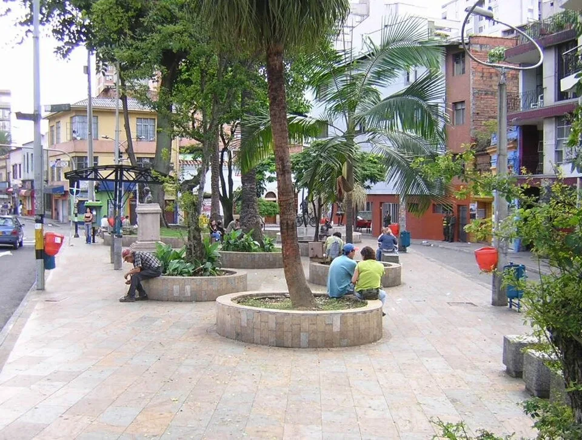
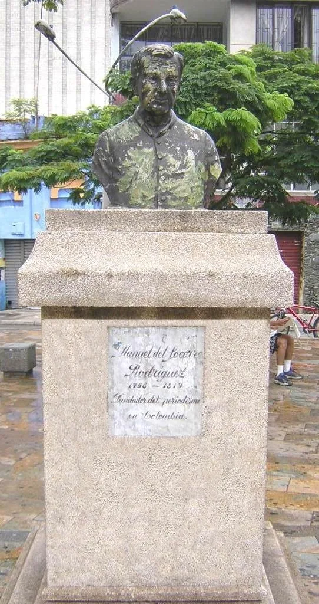

En el número 150 de Universo Centro conviven una sátira sobre vampiros y consumo, una historia de los oficios fotografiados en Barrio Triste, un cuento de gallinas y un relato sobre volantes de brujos en Junín.
La sátira comienza en una plazoleta de Belén; el número incluye también una reproducción de arte. La lista podría parecer el inventario accidental de una mesa de redacción. Vista como una edición, propone algo más exigente: la ciudad no aparece únicamente cuando el asunto se llama Medellín. También está en las formas de trabajo, en los papeles repartidos a pie, en los gustos que una publicación decide tomar en serio y en los registros narrativos que deja entrar. La pregunta de diseño editorial es cómo darles un lugar común sin volverlos una sola voz. [1]
Ese problema distingue a una publicación cultural de un depósito de textos. El número no se sostiene solo porque reúna firmas interesantes. Alguien decide qué puede ir junto, cómo se anuncia cada pieza, qué ritmo producen una imagen y una página escrita, y dónde el lector encuentra un desvío que no sabía buscar. Universo Centro ofrece un caso útil porque su archivo permite cotejar la identidad que el medio declara con entregas publicadas en distintos años. Su trayectoria interesa a RUMMOR por las decisiones que hacen posible una mirada localizada y por las tensiones que esa mirada conserva, no por una supuesta receta para escribir con gracia sobre la calle. [1][2][3]
El editorial del número 150 recuerda un origen ligado a una barra de bar, a las conversaciones de su entorno y al deseo de verlas impresas. Después entraron periodistas, artistas, ilustradores, fotógrafos y otros colaboradores. Es la memoria que el propio medio ofrece de sí mismo; una historia independiente necesitaría más voces y documentos. Basta para reconocer una dirección: el periódico no empezó con una taxonomía completa de la ciudad ni con una promesa de cubrir todos sus sectores. Encontró temas y formas al sostener una conversación y hacerla circular. El paso difícil fue convertir la familiaridad de un grupo en páginas capaces de interesar también a quien no compartía sus referencias. [2]


Una edición decide qué entra
La portada digital de la edición 150 enumera piezas de géneros distintos. Consumidor final, de Federico Arteaga, empieza en la plazoleta de la Nueva Villa de Aburrá y deriva hacia una ficción satírica sobre vampiros, consumo y mercadeo. El certamen de los muchos oficios, de Jorge Iván Agudelo, parte de fotografías de trabajadores del archivo de la Biblioteca Pública Piloto. Las hay, las hay, de Laura Almanza, sigue en primera persona la curiosidad por unos volantes de servicios esotéricos. No son tres maneras de ilustrar una misma tesis. Cada texto establece un pacto diferente con el lector. Leer la sátira como un registro factual destruiría justamente la variedad que esta edición permite ver. [1][4][5][6]
En la primera pieza, detalles reconocibles de una plazoleta proporcionan suelo a un giro absurdo: los compradores nocturnos acaban siendo vampiros y el lenguaje de los estudios de mercado queda expuesto por la ficción. Los horarios y negocios que la voz menciona pertenecen al relato; no son datos que este ensayo pueda certificar. En la segunda pieza, el archivo fotográfico exige distinguir entre lo que una imagen muestra y lo que el autor interpreta. En la tercera, la voz narrativa conduce una experiencia singular; no ofrece un censo de creencias urbanas. El lector cambia de instrumento entre una pieza y la siguiente. La edición hace posible ese cambio sin una explicación institucional a cada paso. [4][5][6]
La sección Arte Central añade otra alteración del ritmo. En el número 150 presenta Hotel, obra de Jorge Alonso Zapata, con autor, fecha, técnica y soporte. Una imagen no llega allí para llenar el espacio que dejó una nota breve: ocupa una posición editorial propia. Para valorarla más a fondo haría falta examinar el ejemplar impreso completo, sus escalas y vecindades, no solo la ficha web. El registro disponible, sin embargo, muestra una decisión sobre el contenido: una obra visual puede ser el centro de atención del número y pedir al lector una pausa diferente de la que pide una crónica. [1][7]
El viejo sitio de Universo Centro también conserva nombres de secciones como Caído del zarzo, Crónica Verde, Estilario, Rayadura Alzheimer y Arte Central. Esos rótulos no equivalen a categorías neutrales. Preparan una expectativa, ofrecen una temperatura verbal y admiten que la publicación tenga humor sin declarar que todo lo publicado sea humorístico. La forma de llamar a una sección puede abrir un espacio para textos que una clasificación convencional no recibiría bien. También puede dificultar que alguien nuevo entienda lo que encontrará. Su valor depende de que el archivo y la navegación ayuden a aprender el código sin exigir pertenecer al círculo que lo inventó. [3]
La organización importa porque una publicación siempre deja cosas afuera. Seleccionar una esquina, un oficio o una voz implica no seleccionar otras. El criterio editorial se vuelve responsable cuando hace visible desde dónde mira y permite reconocer las limitaciones de su posición. El número 150 es una muestra, no una prueba estadística de la representación de Medellín. No sabemos, con una sola edición, qué barrios han aparecido con más frecuencia, quiénes han firmado, qué personas quedaron fuera o cómo se distribuyeron los encargos. Un estudio de toda la colección podría responder parte de esas preguntas. La lectura de una edición sirve para ver el mecanismo, no para absolver a una trayectoria completa.
El título de este ensayo habla de una poética porque las decisiones de un medio producen una manera de percibir. Una plaza puede ser escenario de nostalgia, conflicto o rutina; una fotografía de trabajo puede ser tratada como documento o como decoración; un volante puede ser basura, pista narrativa o evidencia de una economía. Ninguna de esas posibilidades existe fuera de una interpretación. Universo Centro no le agrega poesía a la calle como pintura a un muro: elige qué detalles permiten que algo ya presente se vuelva legible. La calidad de esa operación depende de la precisión con que se describe y comprueba, no de la simpatía que provoque el asunto.
Desde un lugar, sin volverlo el mundo
En su declaración histórica de identidad, el periódico se describe como una publicación gratuita pensada en Medellín y escrita desde varios lugares. Dice que le interesan las calles, las tiendas, los negocios por desaparecer, los museos, la política, la comida, las vejeces y muchos otros asuntos. La misma página habla de ocho años de trayectoria y da cifras de distribución y lectura que pertenecen al momento en que se redactó. No pueden citarse como datos de 2026. Sí permite entender la amplitud que el medio reclamó para sí: el centro no era un barrio cerrado por sus límites administrativos, sino un punto desde el cual mirar fenómenos que lo atraviesan. [3]
El editorial del número 50, publicado en octubre de 2013, localiza el origen en el Parque del Periodista y el Centro. Nombra la barra de El Guanábano y describe la mezcla de escritores, periodistas, dibujantes y lectores que sostuvo los primeros números. La imagen del parque funciona en ese texto como memoria y como autodefinición. Es la versión que la publicación construyó de su propia procedencia, con la afectividad y la ironía de quien la vivió. Un análisis responsable puede aprovecharla como documento y conservar la pregunta crítica: ¿qué relaciones, personas y condiciones quedan fuera cuando una institución cultural cuenta su nacimiento alrededor de una mesa? [8]
La proximidad ofrece ventajas reales a una redacción. Permite reconocer un apodo, advertir que un local cambió de dueño, volver a hablar con alguien después de la primera entrevista. También crea puntos ciegos: la complicidad puede reemplazar una explicación que el lector necesita; la historia de un amigo puede recibir más atención que la de alguien desconocido; la ironía del grupo puede volverse difícil de atravesar para quien llega por primera vez. No se trata de desconfiar de toda mirada cercana. Se trata de exigirle una edición que convierta su acceso privilegiado en conocimiento compartible y que permita a los hechos contradecir las impresiones iniciales.
La sátira de Consumidor final ayuda a ver otra posibilidad. Su primer tramo acumula detalles plausibles sobre la plazoleta; luego aparecen vampiros, compras nocturnas y un supuesto informe de tendencias. El procedimiento hace que el lenguaje del mercadeo parezca tan extraño como la ficción que intenta clasificar. La plaza ofrece un escenario reconocible, pero sería un error convertir los detalles del narrador en un diagnóstico urbano de RUMMOR. El valor del texto está en lo que hace con la credibilidad: nos conduce desde una observación que podríamos aceptar hacia una categoría de consumidor deliberadamente absurda. La edición permite que esa operación conviva con piezas que piden otra relación con los hechos. [4]
Ese desplazamiento es especialmente útil para una publicación que también quiere investigar señales culturales. El narrador del cuento convierte al vampiro en un segmento de mercado y presenta su perfil como si la clasificación bastara para comprenderlo. La broma depende de una costumbre reconocible: tomar comportamientos dispersos, ponerles un nombre atractivo y vender la categoría como descubrimiento. Una investigación real puede proponer conceptos nuevos, pero debe mostrar qué casos los sostienen, cuáles quedan fuera y qué cambia al adoptarlos. La sátira no demuestra que todo trabajo de tendencias sea vacío. Expone el riesgo de confundir un vocabulario ingenioso con conocimiento. Leída junto al ensayo fotográfico sobre los oficios, la pieza recuerda que una categoría editorial necesita volver a las personas, los lugares y los documentos de los que salió. Esa vecindad añade una pregunta al número sin que ninguno de los dos textos tenga que enunciarla por completo. [4][5]
El texto sobre oficios plantea un problema diferente. Una foto histórica puede registrar una postura, una herramienta, una pared de taller y la mirada de quien fue retratado. No nos entrega automáticamente el salario, la rutina ni la opinión de esa persona sobre su trabajo. El ensayo de Jorge Iván Agudelo reconoce el archivo fotográfico como punto de partida narrativo. Para seguirlo con rigor habría que revisar las fichas de la Biblioteca Pública Piloto y las atribuciones que acompañan las imágenes. La publicación cultural trabaja bien cuando muestra la distancia entre un detalle visible y la historia que todavía debe investigarse. No necesita fingir que una imagen dice todo por sí sola. [5]
La variedad de la edición impide, además, imaginar un solo «lector del centro». Una persona puede entrar por una sátira ambientada en Belén, otra por un cuento y otra por el arte. La edición crea vecindades inesperadas: después de leer lo que buscaba, alguien puede detenerse en aquello que no sabía que le interesaría. Esa es una capacidad específica del diseño editorial. Un sistema de búsqueda devuelve resultados según una consulta previa; una edición compuesta permite que lo no buscado tenga una oportunidad. La diferencia explica por qué el orden y la proximidad de las piezas importan incluso cuando cada texto puede abrirse de manera independiente.
El humor tiene aquí una función delicada. El editorial 150 recuerda la sátira de sus inicios, y el 50 retrata un entorno donde la exageración y la burla eran parte del intercambio. Un tono insolente puede encontrar contradicciones que un lenguaje solemne evita tocar. También puede usarse para ridiculizar a quien tiene menos poder que quien escribe o para encubrir una afirmación que no se comprobó. La pregunta editorial no es si la página resulta atrevida, sino qué descubre su ironía, de quién se ríe y qué evidencia permite al lector sostener la lectura. El humor necesita precisión, quizá más que un tono aparentemente serio. [2][8]
Esa precisión separa la influencia fértil de la imitación. RUMMOR puede aprender de la apertura temática de Universo Centro, de su atención a escenas laterales y de su disposición a dejar convivir texto, dibujo e imagen. No debería copiar su fraseo, convertir cada esquina en personaje ni fingir una familiaridad que no ha construido. Cada publicación necesita encontrar su propia distancia respecto a los lugares y a las personas que documenta. La admiración crítica es útil cuando permite hacer mejores preguntas sobre el trabajo propio; se vuelve estéril cuando intenta reproducir la voz de otro medio como si fuera una plantilla.

.JPG){kind=link}
Una publicación también es infraestructura
La palabra «independiente» puede describir una posición editorial, pero no explica cómo se paga la impresión, cómo llega un ejemplar a sus lectores o quién mantiene el archivo digital. La declaración histórica de Universo Centro menciona distribución gratuita en numerosos puntos y anunciantes; el editorial 150 recuerda colaboradores y mecenas. Esas referencias muestran que la circulación depende de arreglos económicos y humanos, aunque no permiten reconstruir sus cuentas actuales. La publicación material no aparece por el solo hecho de tener algo que decir. Requiere edición, diseño, impresión, distribución, acuerdos y recuperación de los ejemplares para que sigan pudiendo leerse. [2][3]
El soporte cambia la lectura. Un impreso permite ver juntas proporciones que la pantalla separa: una imagen que ocupa la página, una columna de texto a su lado, un cambio de papel o un intervalo entre secciones. Puede doblarse, prestarse y encontrarse en un lugar no previsto por un algoritmo. La versión digital gana búsqueda, enlaces y acceso remoto, pero necesita decidir cómo mostrar relaciones que antes ocurrían por proximidad física. Copiar la superficie de una página impresa en una pantalla angosta no conservaría su lógica editorial. Hay que traducir la función de cada decisión: qué introduce, qué pausa, qué conecta y qué permite volver.
El archivo restaurado del sitio actual ofrece una respuesta parcial y visible a ese problema. Reúne materiales tempranos y dirige al fondo publicado entre 2008 y 2020. No todo está en un único formato ni bajo una sola dirección web. Esa continuidad imperfecta merece ser observada: preservar una publicación implica mantener rutas, fechas, autorías y nombres de sección mientras cambian plataformas y equipos. Un enlace roto puede borrar una relación editorial tanto como la pérdida de un ejemplar. No se trata de exigir a un medio pequeño una infraestructura infinita, sino de reconocer que el archivo es parte de su obra y de su costo. [9]
La interfaz del sitio actual muestra otra tensión interesante. Distingue crónica, cuento, poesía, relato, reportaje, fotografía e ilustración, y añade tienda, proyectos y archivo. Es un mapa de actividades más amplio que el de una revista que solo publica artículos. Esa amplitud puede permitir recorridos útiles; también obliga a una navegación que no haga competir todas las opciones por la misma atención. La lección para RUMMOR es práctica: la personalidad de una publicación no autoriza a multiplicar destinos sin jerarquía. Las secciones deben ayudar a leer, encontrar y volver, no explicar cada capacidad de la organización a la vez. [9]
Hay decisiones de archivo que son también decisiones sobre poder. Si una pieza aparece solo bajo el nombre de la revista, desaparecen quien la escribió, fotografió o dibujó. Si se conserva el texto pero no el pie de imagen, una escena queda sin lugar ni fecha. Si el buscador privilegia los términos más obvios, los materiales difíciles de clasificar vuelven a ocultarse. Una memoria editorial útil permite reconstruir procedencias y relaciones. Para un medio que toma en serio la vida de calle, esto es especialmente importante: documentar a personas y espacios sin despojarlos de la información que los hace identificables.
El número 150 permite además ver que la continuidad de una publicación no exige inmovilidad. El propio editorial describe cambios de equipos y de maneras de trabajar. Un proyecto que comenzó alrededor de una mesa puede terminar manteniendo varias líneas de actividad sin que todas deban presentarse como el mismo gesto fundador. Su unidad se prueba en las decisiones editoriales renovadas: qué temas acepta, cómo los trabaja, a quién atribuye y cómo permite que sus lectores encuentren conexiones entre piezas. La fidelidad a una mirada no se mide repitiendo el tono de los primeros números. Se mide por la capacidad de seguir observando cuando la ciudad y la redacción cambian. [2]
Para estudiar esa evolución con más rigor haría falta seleccionar números completos de distintos años y compararlos. Se podrían registrar firmas, temas, lugares, formatos, autores de imágenes, proporciones de página y relaciones entre piezas. Habría que entrevistar a editores, colaboradores, puntos de distribución y lectores, distinguiendo recuerdo personal de documento comprobable. Este ensayo no ha hecho ese trabajo y no pretende ofrecer una historia total del medio. Reúne documentos publicados por Universo Centro y una lectura de su edición 150 para mostrar una pregunta de diseño editorial: cómo una publicación produce continuidad sin reducir la ciudad a un repertorio fijo de escenas.
La respuesta provisional está en las vecindades que fabrica. Una sátira situada en una plaza, un oficio documentado en fotografías y un relato sobre volantes pueden compartir un número porque cada uno abre una relación distinta con Medellín. Una obra visual puede interrumpirlos y cambiar el tiempo de lectura. Un archivo puede devolver esas piezas al lector años después. Nada de eso ocurre de manera natural: necesita selección y una forma que permita pasar de una cosa a otra. La poética del periodismo callejero se reconoce allí, en el diseño de condiciones para que una ciudad compleja pueda ser leída sin quedar ordenada a la fuerza. [1][9]
RUMMOR encuentra en este caso una exigencia para sí mismo. No basta con elegir asuntos poco visibles y escribir sobre ellos con simpatía. Hay que precisar desde dónde se mira, qué fuente permite afirmar cada cosa, qué imagen añade conocimiento y qué piezas merecen ponerse en contacto. La voz propia aparece cuando esas decisiones se repiten con criterio y dejan espacio para que los materiales sorprendan a quienes editan. Una publicación puede tener carácter sin hacer que todas sus historias suenen iguales. Puede mirar la calle de cerca y seguir admitiendo que no la conoce entera.
Fuentes.
- Universo Centro, archivo del número 150, agosto–septiembre de 2026. Índice, géneros, firmas y obra central.
- Universo Centro, «Siento sin cuenta», editorial del número 150. Memoria del origen y de la evolución narrada por el medio.
- Universo Centro, «¿Qué es Universo Centro?». Autodefinición histórica; sus cifras no se presentan como actuales.
- Federico Arteaga, «Consumidor final», número 150. Ficción satírica; no fuente factual sobre la plaza.
- Jorge Iván Agudelo, «El certamen de los muchos oficios», número 150. Lectura de fotografías del Archivo Fotográfico BPP.
- Laura Almanza, «Las hay, las hay», número 150. Relato en primera persona.
- Universo Centro, Arte Central 150, Hotel, Jorge Alonso Zapata. Registro de obra.
- Universo Centro, editorial del número 50, octubre de 2013. Autorretrato histórico del medio.
- Universo Centro, Archivo restaurado. Acceso a ediciones tempranas y al fondo 2008–2020.
Alcance: lectura crítica de documentos publicados por el propio medio y del índice de su número 150, consultados el 17.11.2026. No hubo entrevistas, observación de la redacción ni análisis sistemático de todos los ejemplares impresos. Las imágenes de contexto de esta lectura no se presentan como fotografías del trabajo editorial de Universo Centro.